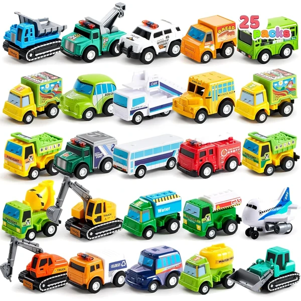

👶 1 año
Set 25 vehículos JOYIN
Un set de 25 coches y camiones en miniatura a fricción, con distintos diseños (bomberos, policía, autobús escolar...). No necesitan pilas: solo hay que tirar hacia atrás y soltar.
⭐
¿Por qué nos gusta?
- ✔25 vehículos con diseños distintos.
- ✔Funcionan a fricción, sin pilas.
- ✔Plástico resistente sin bordes afilados.
💬
Lo que más destacan las familias
Muchos padres coinciden en que da mucho juego tener tantos coches distintos a la vez, sobre todo cuando hay más de un niño jugando. También se comenta que el mecanismo de fricción engancha porque el propio niño puede hacerlos avanzar sin ayuda.